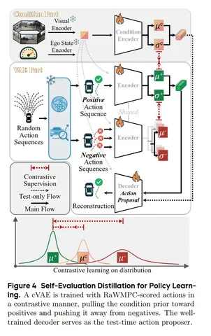

Почти все современные планнеры в автономном транспорте начинают обучать с имитации эксперта. Этот подход позволяет довольно быстро получить вменяемую модель, но плохо справляется с редкими сценариями — потому что среди обучающих примеров для имитации не было аварий и близких к ним ситуаций. Авторы сегодняшней статьи попробовали сделать наоборот: обучить свой предикшн-контроллер для end2end-планнера только на рисках.
Проектируя Risk-Aware World Model Predictive Control (или просто RaWMPC), его создатели полностью отказались от имитации. В планировании целиком полагаются на симулятор, который обучают предсказывать только хорошие траектории.
Обучение состоит из двух основных этапов:
1. Во время предобучения модель тренируется различать рискованные и безопасные ситуации.
2. С помощью contrasting learning’а и вариационного автоэнкодера модель учится выбирать самое лучшее из семплинга.
Сначала end2end-энкодером получают картинки, текущее состояние эго и экшны. Энкодер обучают на вспомогательных задачах (в том числе на сегментации BEV). Трансформер учат предсказывать события: коллизии с пешеходами, машинами и статичными объектами, выезды за пределы дороги, нарушения ПДД.
Далее модель учится на полученных рандомных траекториях: отличает хорошие от плохих. А скорер разделяет их так, чтобы эго-машина ездила только по хорошим траекториям.
Архитектура RaWMPC — энкодер-декодер с зачаточной моделью мира. На входные энкодеры подаются видео, состояние эго и экшн. Всё это обрабатывает общий большой трансформер с селф-аттеншеном. Модель пытается предсказывать будущие латетные состояния, из которых специализированные декодеры построят будущее мира вокруг в виде семантической маски, состояния эго и вероятности что-то нарушить.
На бенчмарке Bench2Drive с симулятором CARLA модель RaWMPC обгоняет SOTA-методы, основанные на имитации, даже при полном отсутствии обучающих траекторий экспертов (DS 87,34 против 86,77 у HiP-AD).
Самое интересное в статье — авторы целиком и тренируют, и тестируют модель только в симулированном мире CARLA. Это значит, что переход из симуляции в реальный мир для RaWMPC потенциально более проблемный, чем для имитационных методов.
По словам авторов, одно из достоинств RaWMPC — устойчивость к незнакомым условиям. За счёт contrasting learning’а модель гораздо устойчивее к сдвигу домена и не только повторяет за экспертом, но также знает, что делать точно не надо. В тесте, где системы учились только на солнечной погоде, а проверяли их в сильный дождь, RaWMPC показал гораздо меньшую деградацию качества, чем лидеры имитационного обучения.
Разбор подготовил
404 driver not found
